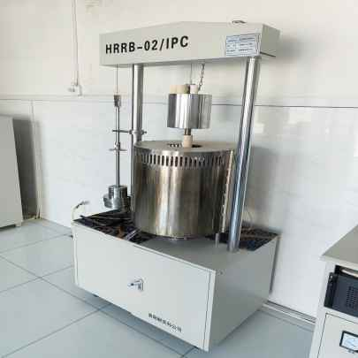

质量控制系统
55年专业制造经验，建立完善的质量管理体系，确保每一件产品都符合国际标准
0
产品合格率 %
0
出厂检验率 %
0
出口国家 +
质量是我们的生命线
河南元达科建立完善的质量管理体系，严格按照国际标准进行生产，确保每一件产品都符合客户要求。
55年制造经验，技术工艺成熟稳定
通过ISO9001等多项国际认证
0
产品合格率 %
0
出厂检验率 %
0
质量响应时间 h
0
出口国家 +
先进检测设备
配备专业检测设备，确保检测结果准确可靠
化学成分分析仪
精确检测产品化学成分，确保各元素含量符合标准要求。

耐火度测试仪
准确测定产品耐火度，保证高温环境下的稳定性能。

抗压抗折强度试验机
测试产品的机械强度，确保结构稳定性。
热震稳定性测试仪
测试产品抗热震性能，确保温度急变环境下的可靠性。

气孔率测定仪
测定耐火材料的气孔率和体积密度，评估致密程度。

高温荷重软化温度测试仪
测定耐火材料高温荷重下的变形特性。

高温电阻炉
用于耐火材料烧成试验和高温性能测试。
精密电子天平
高精度称重设备，确保检测数据准确性。
电热恒温干燥箱
用于样品的干燥处理和恒温保存。
权威认证资质
通过多项国际权威认证，品质值得信赖

ISO 9001:2015
质量管理体系认证
✓ 有效认证ISO 14001:2015
环境管理体系认证
✓ 有效认证ISO 45001:2018
职业健康安全管理认证
✓ 有效认证
×